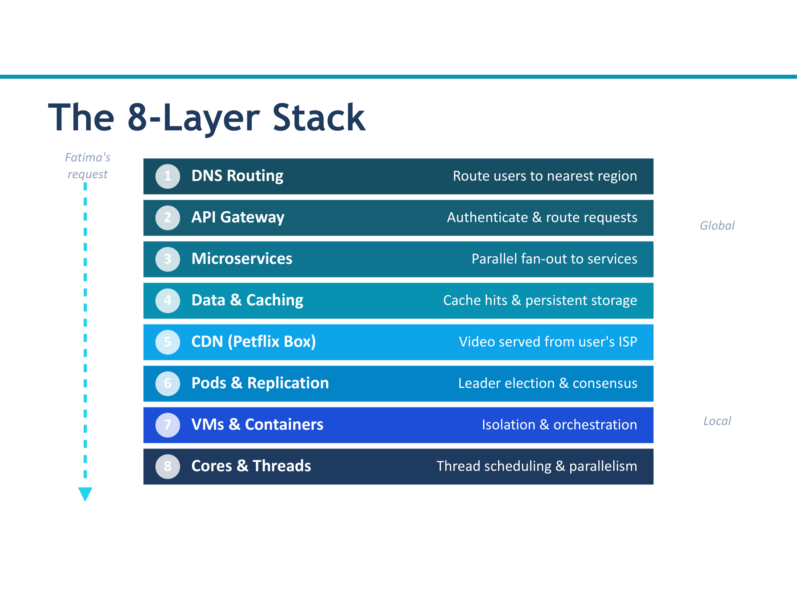
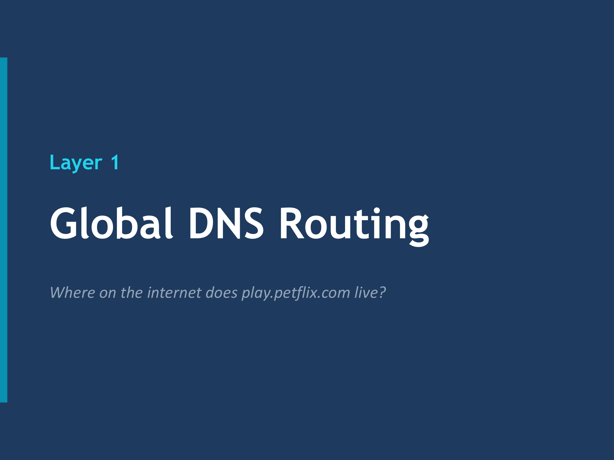
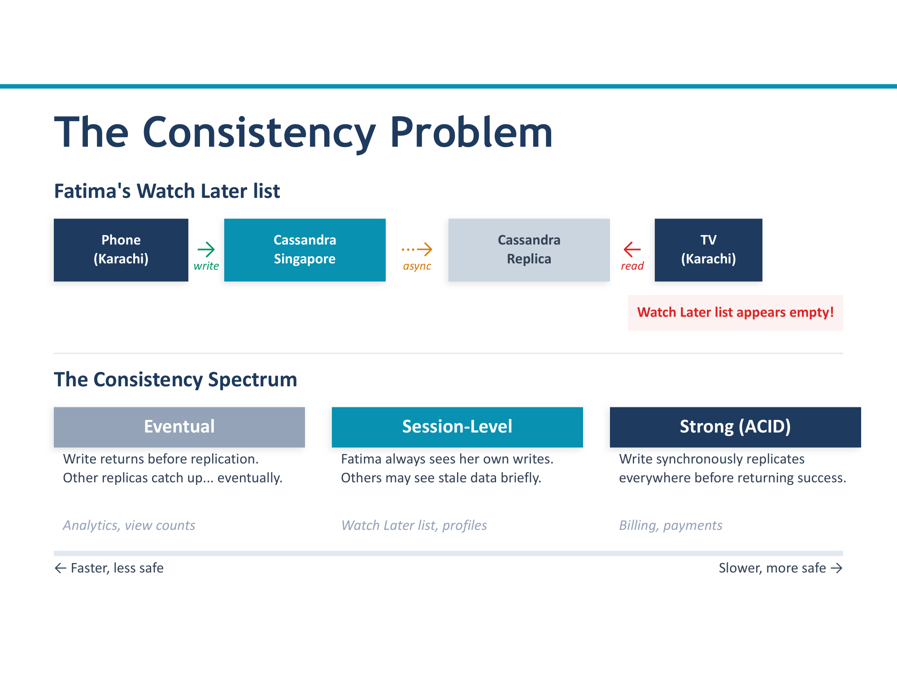
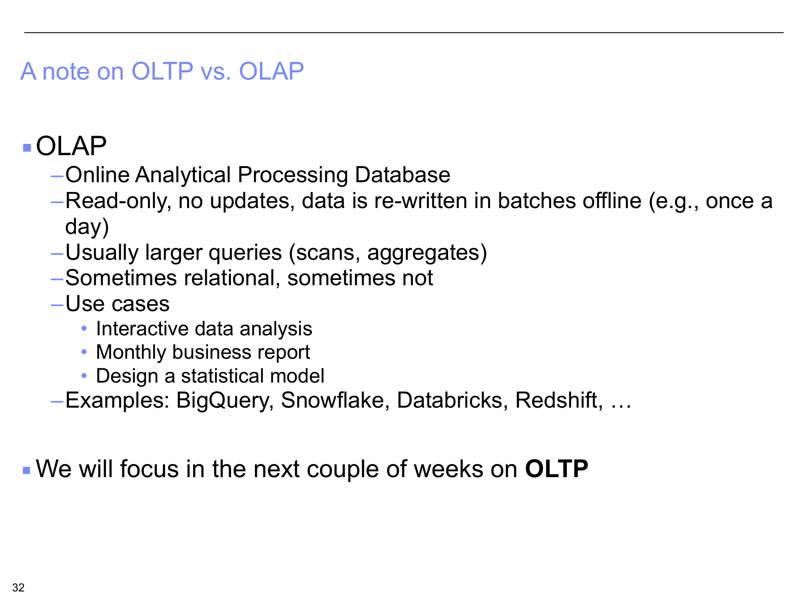
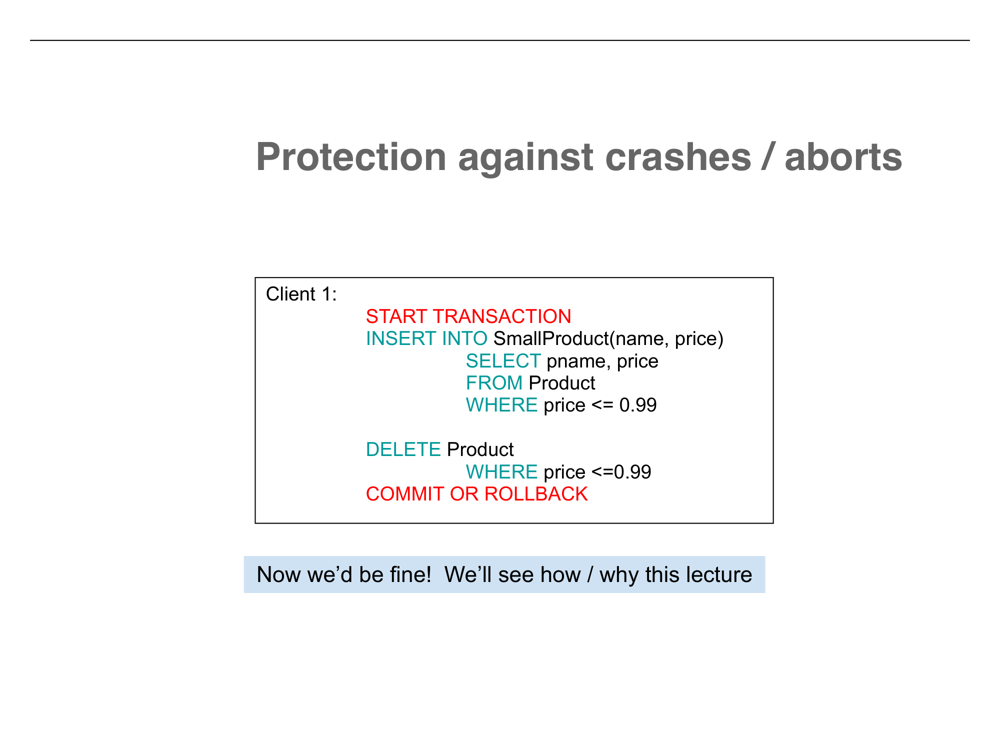
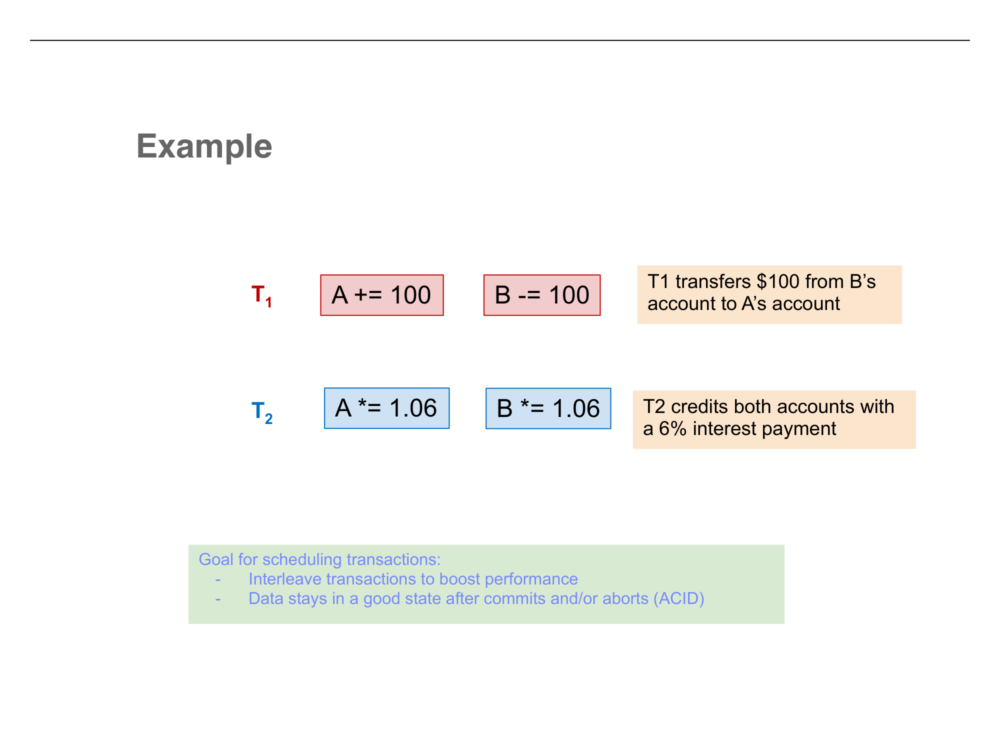
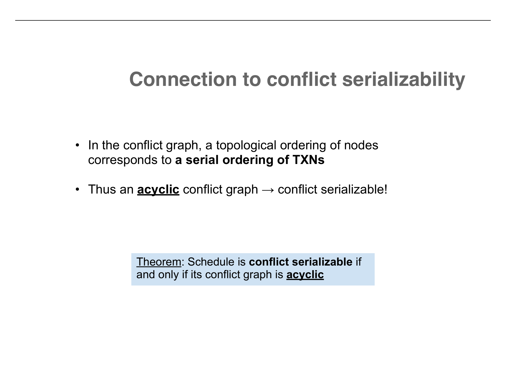

1. The Petflix 8-Layer Stack

| Layer | Name | Key Concept | Problem Solved |
|---|---|---|---|
| 1 | DNS Routing | Geo-routing, failover | Route to nearest healthy datacenter |
| 2 | API Gateway | Circuit breaker, rate limiting | Prevent cascading failures |
| 3 | Microservices | Parallel fan-out, backoff | Assemble response from many services |
| 4 | Data & Caching | Consistency spectrum | Fast reads, stale data management |
| 5 | CDN | Adaptive bitrate, per-title encoding | Deliver video with optimal quality |
| 6 | Replication | Raft consensus, leader election | Fault tolerance, data consistency |
| 7 | VMs/Containers | Kubernetes, auto-scaling | Resource isolation, elastic scaling |
| 8 | Cores/Threads | Concurrency vs parallelism | Efficient hardware utilization |
2. DNS Routing & API Gateway

DNS Routing
- Geo-routing: nearest datacenter
- Failover: reroute if region is down
- Weighted: proportional traffic distribution
Circuit Breaker
- Closed: normal operation
- Open: service failing, return fallback
- Half-Open: testing recovery
3. Microservices, Caching & Consistency

| Consistency Level | Guarantee | Trade-off |
|---|---|---|
| Eventual | Data converges eventually; reads may be stale | Fast, highly available |
| Session-level | You always see your own writes | Good middle ground |
| Strong | All reads see the latest write, always | Slow, requires coordination |
4. CDN, Replication & Infrastructure
CDN — Petflix Box
- Physical server inside your ISP
- Per-title encoding recipes
- Adaptive bitrate streaming
- VMAF perceptual quality metric
Raft Consensus
- Three states: Leader, Follower, Candidate
- Heartbeat timeout triggers election
- Majority vote to become leader
- Majority ACK for committed writes
VMs
Full OS isolation via hypervisor. Heavy but strong security boundaries. Each VM has its own kernel.
Containers
Share host OS kernel. Lightweight, fast to start. Weaker isolation but much more efficient.
5. OLTP vs. OLAP

| OLTP | OLAP | |
|---|---|---|
| Operations | Read + Write | Mostly Read |
| Data volume | Small per transaction | Scans large datasets |
| Latency | Milliseconds | Seconds to hours |
| Users | Many concurrent | Few analysts |
| Example | Visa: 65,000 txns/sec | "Total sales by region last quarter" |
6. The ACID Properties

| Property | What it means | Enforced by |
|---|---|---|
| Atomicity | All or nothing — no partial transactions | Write-Ahead Logging (WAL) |
| Consistency | Data stays valid (constraints hold) | Application logic + locking |
| Isolation | Concurrent transactions don't interfere | Serializability / 2PL |
| Durability | Committed = permanent, survives crashes | Write-Ahead Logging (WAL) |
7. Write-Ahead Logging (WAL)

[TxnID, PageID, Offset, OldValue, NewValue]UNDO: use OldValue to reverse uncommitted changes.
REDO: use NewValue to reapply committed changes.
The Two Critical Rules
Rule 1 (Durability)
Before acknowledging COMMIT, flush ALL of that transaction's log records to disk. Ensures committed changes can always be redone.
Rule 2 (Atomicity)
Before writing a dirty data page to disk, flush ALL log records for changes on that page. Ensures uncommitted changes can always be undone.
Recovery after crash
COMMIT record found
REDO all changes. The transaction committed, so its effects must be permanent (durability).
No COMMIT record
UNDO all changes. The transaction didn't finish, so roll everything back (atomicity).
8. Concurrent Transactions & Scheduling

Serial Schedule
One transaction at a time, no interleaving. Always correct. Terrible performance.
Interleaved Schedule
Operations mixed between transactions. Good performance. May or may not be correct.
The three conflict types
Two operations from different transactions on the same data item where at least one is a write:
| Type | Pattern | Why it matters |
|---|---|---|
| Read-Write (RW) | T1 reads X, T2 writes X | Order determines what T1 sees |
| Write-Read (WR) | T1 writes X, T2 reads X | Order determines if T2 reads old or new value |
| Write-Write (WW) | T1 writes X, T2 writes X | Order determines final value of X |
9. Conflict Serializability & Conflict Graphs

The 3-step test
- Find conflicts — scan for RW, WR, WW pairs on the same data item between different transactions
- Build conflict graph — draw edge from Ti → Tj if Ti's conflicting operation comes first in the schedule
- Check for cycles — acyclic = conflict serializable; topological sort gives an equivalent serial order

Quick Reference Cheat Sheet
| Concept | Remember this |
|---|---|
| 8-Layer Stack | DNS → Gateway → Microservices → Cache → CDN → Replication → VMs/Containers → Cores |
| Circuit Breaker | Closed (normal) → Open (failing, return fallback) → Half-Open (testing recovery) |
| Thundering Herd | Service recovers, all backed-up requests stampede. Fix: load shedding + exponential backoff with jitter. |
| Consistency Spectrum | Eventual (fast, stale) → Session-level (see your own writes) → Strong (always latest, slow) |
| Raft Consensus | Heartbeat timeout → election → majority vote. Writes need majority ACK. |
| VMs vs Containers | VMs: full OS, strong isolation, heavy. Containers: shared kernel, light, fast, weaker isolation. |
| Kubernetes | Schedule, Scale, Heal, Deploy. |
| Concurrency vs Parallelism | Concurrency: juggling tasks (interleaving). Parallelism: doing tasks simultaneously (multi-core). |
| OLTP vs OLAP | OLTP: many fast transactions. OLAP: few complex analytical queries. |
| ACID | Atomicity + Durability = WAL. Isolation + Consistency = Serializability/Locking. |
| WAL Rules | Rule 1: flush log before COMMIT ack (durability). Rule 2: flush log before dirty page write (atomicity). |
| WAL Recovery | COMMIT found → REDO. No COMMIT → UNDO. |
| Sequential vs Random Writes | 1M pages: random = ~100,000s. Sequential = ~1s. WAL is append-only = fast. |
| Conflict | Same data item, different transactions, at least one writes. (Read-Read = NOT a conflict) |
| Conflict Graph | Nodes = transactions, edges = conflicts (first → second). Acyclic = serializable. |
| Topological Sort | Pick node with 0 incoming edges, remove, repeat. Gives equivalent serial schedule. |